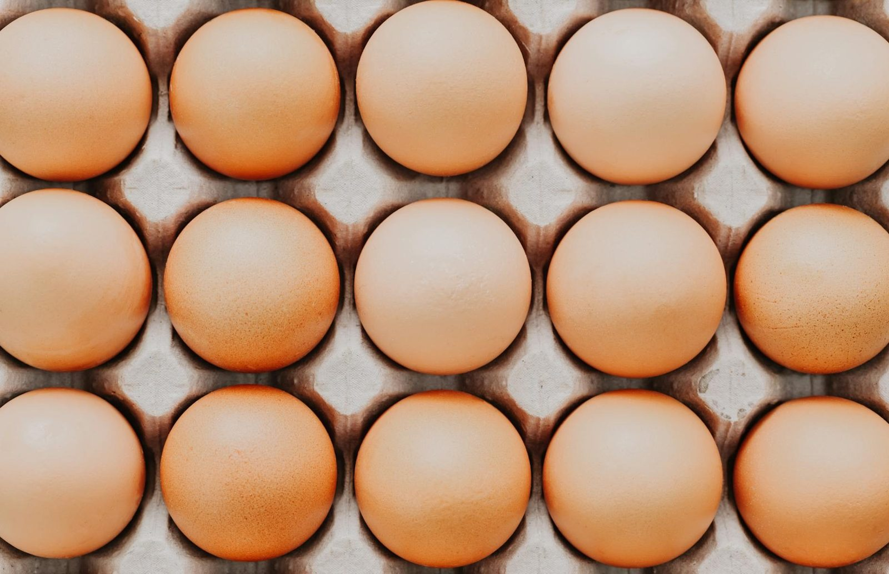
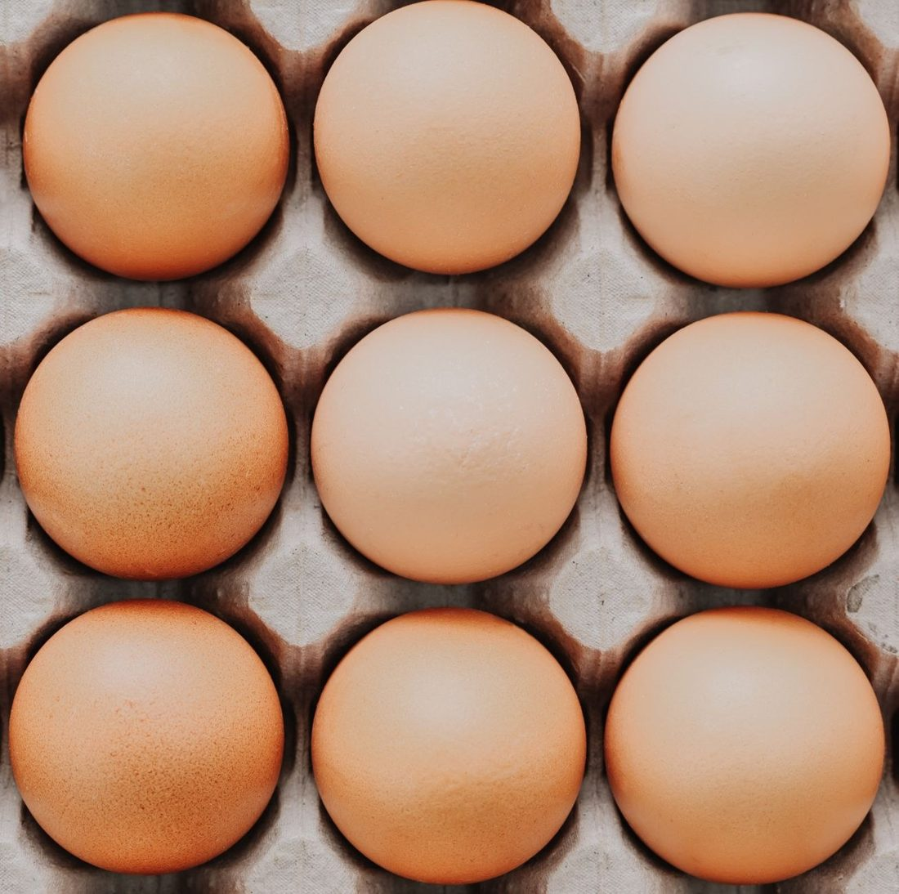
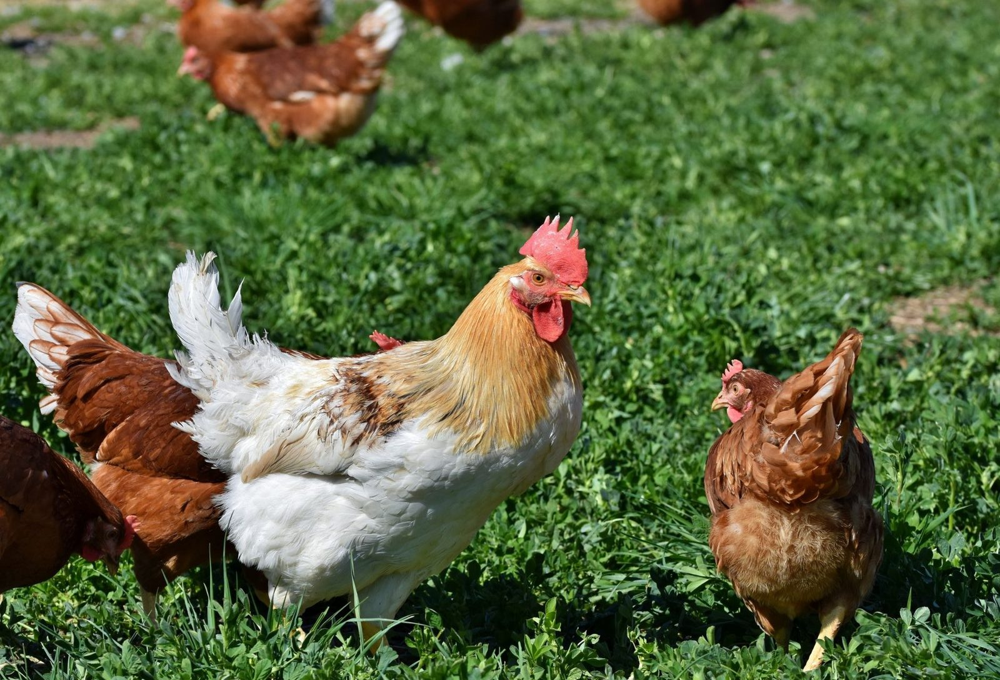
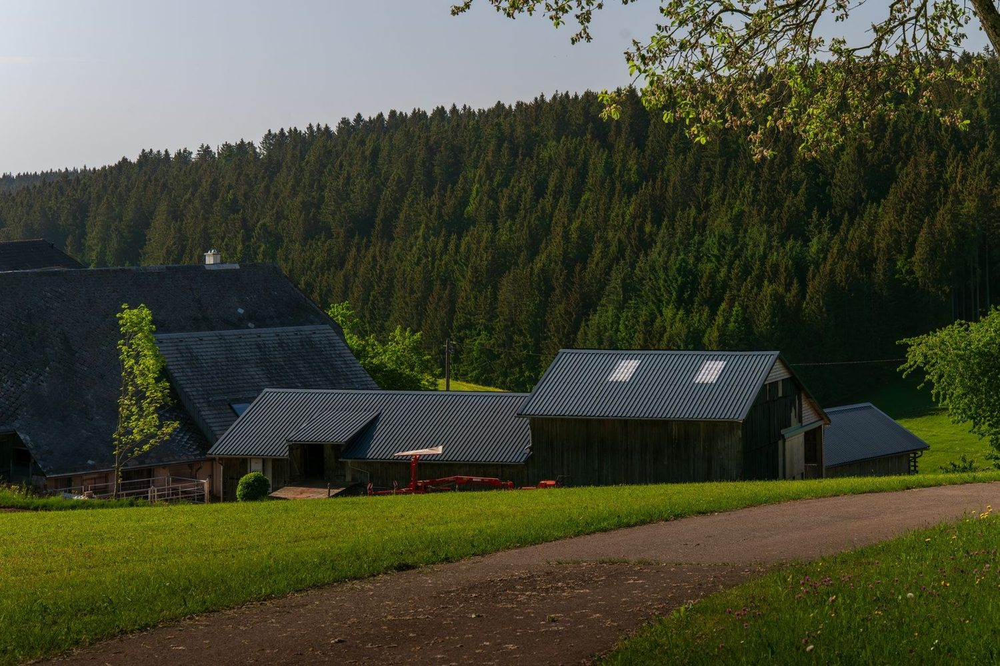
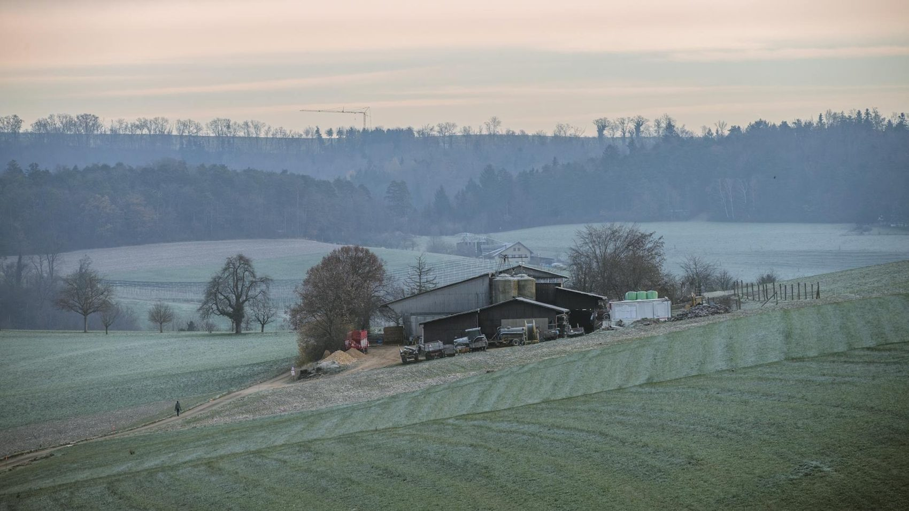

Direktverkauf ab Hof · Vordorf
Frische Eier.
Direkt vom Hof.
Aus Freilandhaltung, jeden Tag frisch im Selbstbedienungs-Hofladen. Kein Umweg über das Regal — vom Stall direkt in Ihren Korb.

Wie frisch ist frisch?
So frisch, dass zwischen Legenest und Hofladen nur ein kurzer Weg liegt. Wir sammeln die Eier am selben Hof, an dem Sie sie kaufen.
Was gibt's im Hofladen?

- Eier S–XLaus Freilandhaltung, nach Größe sortiert
- 6er & 10erim Karton — oder eigene Schachtel mitbringen
- Tagesfrischam Hof gesammelt, am Hof verkauft
- Selbstbedienungnehmen, Kasse des Vertrauens, fertig
- Regionalaus Vordorf, ohne Umweg über den Handel
- Fairdirekter Preis, direkter Weg


Wo kommen die Eier her?
Vom Hof Katenhusen in Vordorf. Ein Legehennenbetrieb in Familienhand — die Hennen laufen im Freiland, die Eier kommen ohne Zwischenstation in den Hofladen. So bleibt der Weg kurz und die Sache ehrlich.
— Udo Katenhusen
Wann hat der Hofladen offen?
Öffnungszeiten
Täglich 7:30 – 19:00 Uhr
Selbstbedienung am Hof — auch sonntags. Vor der Masch 7, Vordorf.
Zum Hof